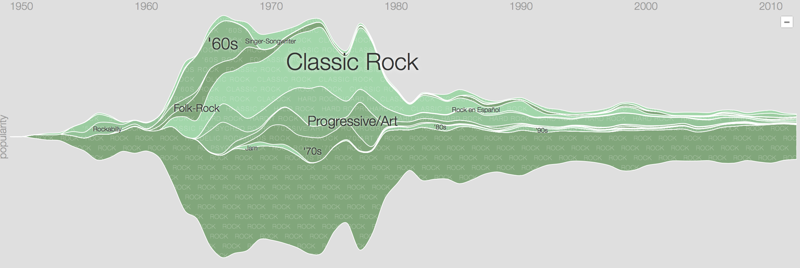
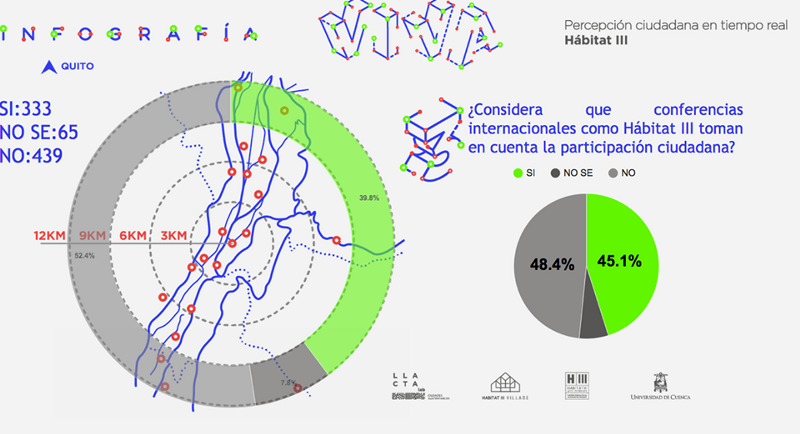
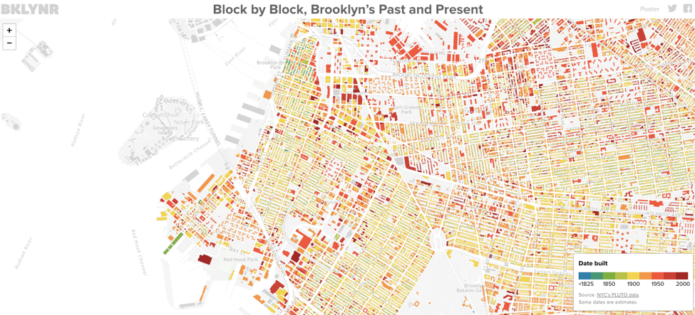
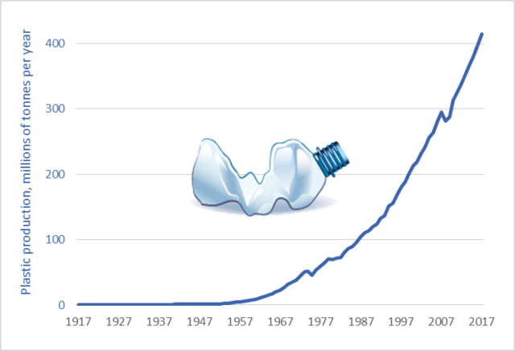
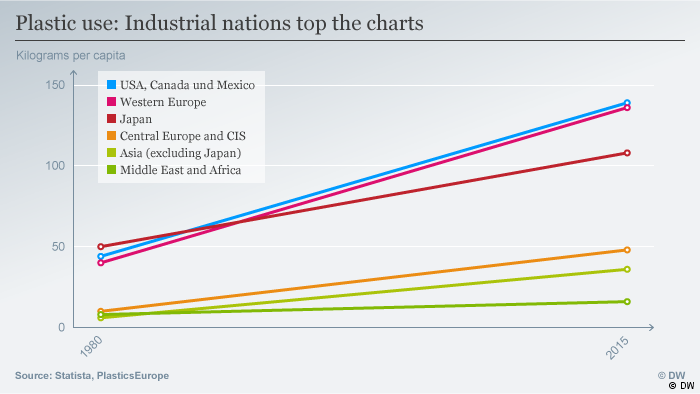
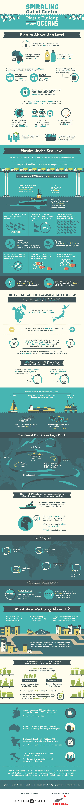
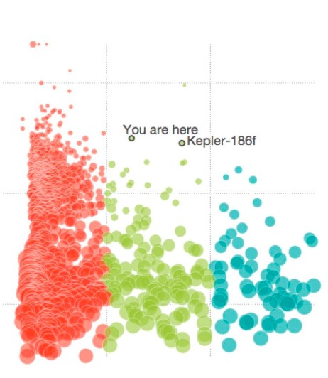
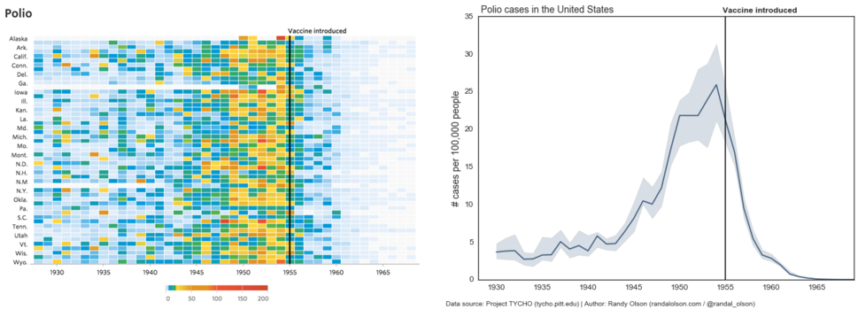

Chapter 3 Case Studies
This chapter explores some interesting case studies of data visualizations. Critiquing these case studies is a valuable exercise that helps both expand our knowledge of possible visual representations of data as well as develop the type of critical thinking that improves our own visualizations. Furthermore, the examination and evaluation of case studies help show that new designs are just as usable as existing techniques, demonstrating that the field is suitable for future development.
3.1 Introduction
Visualization is like art; it speaks where words fail. The usefulness of data visualizations is not just limited to business and analytics; visualizations can explain almost anything in the world. Wars, rescue operations, social issues, etc. can be visualized to synthesize the details important details relevant to the issues. In particular, phenomena like the Syrian war, the number flights during Thanksgiving in the USA, the controversy of ‘#OscarsSoWhite,’ etc. present such complexity that we can write endless paragraphs and still fail to convince readers. Below are visualizations of some of these important and complex topics - visualizations that are much more persuasive than an essay, and with a tiny fraction of the text.
Many of the case studies mentioned below come from the following articles:
| Source | Description |
|---|---|
| (Nathan Yau 2015a) | This source picks the top 10 best data visualizations of 2015. For each pick, the author displays the project plot and also describes his reasoning for choosing that chart as an exemplary visualization. This article is useful for getting a basic understanding of what characteristics a good visualization should include. |
| (Kayla Darling 2017) | The author has chosen fifteen of the best infographics and data visualizations from 2016 and explained the reasoning behind these choices. |
| (Crooks 2017) | This author has chosen 16 examples of data visualization that demonstrate how to represent data in a way that’s both compelling and easy to digest. |
| (Stadd 2015) | These 15 data visualizations show the vast range that data analysis is applicable to, from pop culture to public good. Take a look at them to get inspiration/understanding for your own work. |
| (Chibana 2016) | This source includes 15 data visualizations that cover current events, including politics, Oscar nominations, and immigration. |
| (Andy 2009) | Vizwiz is a blog about Tableau-based data visualization. It has case studies about how to improve visualizations, written by Andy Kriebel, a famous Tableau Zen Master. This blog is recommended because it is not only practical but also full of insights. One of the best parts of this blog is the “Makeover Monday,” which develops a new visualization based on an original one. This blog also includes excellent tips for and examples of Tableau. |
| Viz of the Day | Tableau has a gallery that displays great data visualization examples created by Tableau. It is useful to see how people are using all kinds of data to create informative yet fun data visuals. Data being used is also attached to the example so we can try to mimic what other people did as well. |
3.2 Geographic Visualizations
Geovisualization or geovisualisation (short for geographic visualization), refers to a set of tools and techniques supporting the analysis of geospatial data through the use of interactive visualization. Like the related fields of scientific visualization and information visualization geovisualization emphasizes knowledge construction over knowledge storage or information transmission.To do this, geovisualization communicates geospatial information in ways that, when combined with human understanding, allow for data exploration and decision-making processes. Source:(contributors 2019a) More specifically, Geovisualization is a process that alters geographic information so that we can consume it with our eyes. Its purpose is to capitalize on our affinity for visual things and convert the seemingly random collection of information available to us into a form that can be quickly understood. Many tools can be used for Geographic Visualization, such as Mapbox,Carto,ArcGIS Online and HERE Data Lens. Source:(Gloag, n.d.: Tools & Techniques)
Often, people use maps to visualize data that should not be mapped. Here are some examples of when a map visualization is a good choice.
3.2.1 Spies in the Skies
The map below is from a Buzzfeed article (Aldhous and Seife 2016) that shows how common it is for the government to observe people. It was filled with red and blue lines (representing FBI and DHS aircraft, respectively) which illustrate the flight paths of the planes. When planes circle an area more than once, the circles become darker. The circles change by day and time, and individual cities can be typed into a search bar to see the flight patterns over them. The visualization rather creatively looks almost like a hand-drawn map. While presenting an ordinarily uncomfortable topic, this allows individuals to check things for themselves, hopefully providing some peace of mind.
Source: (Kayla Darling 2017)

New York Flight Patterns
3.2.2 Two Centuries of U.S. Immigration
This interactive map from (Galka 2016) shows the rate of immigration into the U.S. from other countries over the last 200 years in 10-year segments. Each colored dot represents 10,000 people coming from the specified country. Countries then light up when they have one of the highest rates of migration. A tracker on the left indicates what countries sent the most people to the U.S. at what times.
This is a good visualization because it is engaging and easy to read and interpret. The movement of the dots draws the reader’s attention while the brightly lit countries make it easy to pick out the highest total migrations. The bright colors and dark background help the information stand out. This map is a bit simple, but effective.
Source: (Kayla Darling 2017).

US Immigration
3.2.3 Uber: Crafting Data-Driven Maps
Map visualization is essential for companies like Uber that need to track metrics using geo-space points. In this article, the designer from Uber talks about the challenges of designing such visualizations and the possible solutions (Klimczak 2016).
The challenges that Uber faced when crafting geospatial visualizations:- There are great individual maps but as a whole lack of consistency across the company.
- Common graphing tools like Sketch does not support GIS file, which is essential to Uber’s insights.
- The scale of the framework includes more than 400 cities in the world with a variety of different geographic features and data types.
To tackle these problems, Uber started by defining base map themes by optimizing detail, color, and typography. Based on that, data layers are added using scatter plots and hex bins, with careful color selection to help their team make decisions. To make it even better, Uber took a further step by adding trip lines (see images below), which became a signature visualization of Uber. Choropleths are also used to help visualize how metrics and values differ across geographic areas. Uber uses US postal codes as geographic boundaries and infuses various datasets to create the color variation.
The visualization in this article is a classic problem of visualizing geographic data. The detailed explanation of the problems and how they are solved can be beneficial for people or startups trying to conceptualize and make appropriate visualizations that support the decision-making process.
Uber Route Maps
Source:(Klimczak 2016)
3.3 Demographic Comparisons
One common use of visualization is to compare different groups against each other, such as political parties or generations.
3.3.1 Young Voters, Class and Turnout: How Britain Voted in 2017
This article’s goal is to convey the change in party votes in the 2017 UK general election compared to votes in 2015 (Holder, Barr, and Kommenda 2017). The change in party votes was shown with regards to three demographic factors: age, class, and ethnicity. For each factor, there are four graphs (one per political party), each illustrated in the party’s standard color. The change in the percent of votes is shown as an arrow where the arrow’s shaft is the length of the difference from 2015 to 2017 while the x-axis is the demographic factor split into different bins.
This a good visualization because it is straightforward to read and interpret. The color-coding of the arrows and party names makes it easy to pick out the different parties. The index is smartly spread across the visualization to reduce cross-referencing, and color in the graph represents the actual party colors in the campaign. The arrow lengths highlight just how significant of a change happened. For example, in the Age section, it is easy to see the pattern between the Labour party gaining many voters aged 18 to 44 and the Conservative party gaining voters aged 45 and up.

UK Party Votes by Age
Source: (Holder, Barr, and Kommenda 2017)
3.3.2 U.S. Migration Patterns
The New York Times data team mapped out Americans’ moving patterns from 1900 to present, and the results are fascinating to interact with (Aisch, Gebeloff, and Quealy 2014). We can see where people living in each state were born, and where people are moving to and from. The groupings of the destinations vary based on that state’s trends, preventing unnecessary clutter while still showing detail when vital, as can be seen by the difference between the charts for California and Pennsylvania. When generating interactive charts, one must always assume that the audience will not interact with it. The message of a chart has to be clear enough that anyone just viewing the generic chart can understand.
Overall, this type of chart can work well to visualize movement in data over time, such as with migration. However, it must be done carefully to maintain clarity. Too many categories with colors and crossing lines can make it difficult for a reader to keep track of what the data is saying and it can quickly go from a very graphic visualization to a chaotic mess of lines. The designer does a pretty good job with these visualizations by limiting the number of categories in grouping states by region (West, South, Midwest, etc.). But when introducing many dimenional variables such as Migration from Pennsylvania, the chart can quickly turn convoluted and hard to read which costs the audience. Finally, it is not completely clear why so many crossing lines are necessary for the Pennsylvania chart. The crossing lines, along with the use of the same color for different lines within the same regional categories, can introduce unnecessary complexity.
Migration from California
Migration from Pennsylvania
Source:(Aisch, Gebeloff, and Quealy 2014)
3.3.3 The American Workday
NPR tapped into American Time Use Survey data to ascertain the share of workers in a wide range of industries who are at work at any given time (Quoctrung Bui 2014). The original question of when Americans work, rather than the number of hours worked, is answered in the graph. The chart overlays the traditional 9 AM-5 PM standard workday as a reference point, helping the audience draw exciting conclusions. Below is a screenshot of the data product; the original graph is more interactive and allows the audience to explore when people are working for different occupations.

Some interesting findings include: 1. Construction workers both start and finish their workday earlier and generally do not work at lunch hours as there is a massive drop at noon.

- Servers and cooks’ schedule are the opposite of all other occupations with the peak from lunch through the evening.

- Protective services, e.g., police officers, firefighters, and detectives, have many workers working throughout the night, which is entirely different from all other occupations.

This data product is an excellent example because the analytic design has been applied to contrast specific occupations to the traditional 9-5 working hours. This is easy to understand and make particular occupations stand out more manageable. The use of color for highlighting the selected occupation in the graph helps to categorize different occupations as well.
3.3.4 How People Like You Spend Their Time
This visualization from (Yau 2016) lists several categories such as “personal care” and “work” along one side of a graph with a line illustrating the amount of time the average person in a particular demographic spends on each subject. Entering different parameters at the top, such as changing gender or age, causes the lines to shift to feature that demographic. The simplicity of this visualization helps the information get across and avoids bogging down the statistics. Sometimes, less is more.
Source: (Kayla Darling 2017)

3.3.5 Britain’s Diet In Data
This is an excellent example about how to present a significant amount of comprehensive data - distributed across different categories and measured in different metrics - in a simple yet effective manner, while still maintaining interest and aesthetics. The data product attempts to show how the average Briton’s diet has changed over the last four decades for the better (Institute 2016). It does this by displaying simple trend lines that show that more harmful and fatty foods are being consumed less while consumed more healthier and leaner foods. It further breaks down every major food category into tens of its constituent products, and in both the overview and deep-dive versions, provides further levers to massage more meaning out of the data. It also shows how the contribution of different foods to the typical diet has changed over the years. Here, we can toggle the year to see exactly how much of each food was consumed, again with another deep-dive into the constituents of every primary food group.
 Source: (Institute 2016)
Source: (Institute 2016)

Such a visualization is ideal for a layman who would want to walk away with an immediate and accurate understanding of the overall dietary changes. It also provides plenty detail on demand for the more discerning viewer who might have more time and inclination to dissect and parse through the graphs. It is difficult to use the same data product to cater to both types of viewers in such an adequate capacity, which is what makes this particular data product so impressive and useful. It satisfies the principles of graphical excellence as stated by Edward Tufte : >“Graphical excellence is that which gives to the viewer the greatest number of ideas in the shortest time with the least ink in the smallest space.”
Source: (Tufte 1986)
3.3.6 Selfie City
Selfie City, a detailed multi-component visual exploration of 3,200 selfies from five major cities around the world, offers a close look at the demographics and trends of selfies (Manovich et al. 2014). This project is based on a unique dataset compiled by analyzing tens of thousands of images from each city, both through automatic image analysis and human judgment. The team behind the project collected and filtered the data using Instagram and Mechanical Turk. Rich media visualizations (imageplots) assemble thousands of photos to reveal interesting patterns. It provides a demographic and regional comparison of selfies.

Estimated Age and Gender Distribution
Source: (Manovich et al. 2014)
3.3.7 Evolving Demographics
Another frequent use is to look at how something changes over time. Time-series data can be shown many ways, and these are some examples.
3.3.7.1 Millennial Generation Diversity
CNNMoney created an interactive chart using U.S. Census Data to show the size and diversity of the millennial generation compared to baby boomers (Kurtz and Yellin 2018). While the article’s main point is that the millennial generation is bigger and more diverse than the baby boomer generation, it also contains information about all of the other living generations. It turns hard numbers into an intriguing story, illustrating the racial makeup of different age groups from 1913 to present.
The author also summarized three key findings from the graph: 1| The most common age in the US is 22 years old. 2| The median age in the US is 37.6 years old. * 3| Among the youngest generation, only 50% of the population is white with the potential of dropping from the biggest race in the US.

Racial Diversity of US Generations
Source:(Kurtz and Yellin 2018)
This is an effective graph because while it contains many data points, it makes the overall trends very clear without sacrificing much detail. You can see the drop in some white people and the increasing growth of the other racial categories.
3.3.7.2 How the Recession Reshaped the Economy, in 255 Charts
The first large graph contains 255 lines to show how the number of jobs has changed for every industry in America, using color to highlight the lines and let viewers see the specifics for each industry (Ashkenas and Parlapiano 2014). By hovering over a line, viewers can get the detailed information of that industry’s job trend. Keeping this extra data hidden until needd will make it easier for readers to absorb the bigger picture from this vast data visualization.
Following charts are subsets categorized by job sector and sub-industries. Readers can choose the industry or sector they are interested in and, similar to the first graph, view the more detailed information by hovering over a line.


Source:(Ashkenas and Parlapiano 2014)
3.3.7.3 An Aging Population: Projected Number of Children and Older Adults
An aging population is always a hot topic in social economics and politics (United States Census Bureau 2018). Here we explore a collection of data visualizations showing the aging population in the U.S. and the world.

Source:(United States Census Bureau 2018)
This example includes a bar chart and a line graph to demonstrate the aging population compared with the population of children. This visualization allows easy comparison, employs color to differentiate the categories, and highlights the intersection point.
3.3.7.4 From Pyramid to Pillar: A Century of Change, Population of the U.S.

This is a population pyramid. “A population pyramid is a pair of back-to-back histograms for each sex that displays the distribution of a population in all age groups and in gender” (Bureau 2018b). It is good to visualize changes in population distributions (sex, age, year). The shape of a pyramid is also used to represent other characteristics of a population. To illustrate, A pyramid with a very wide base and a narrow top section suggests a population with both high fertility and death rates. It is a useful tool to make sense of census data. (“An Aging Population,” n.d.) offers an animated pyramid.

Comparison of aging population in US and Japan
Source:(“An Aging Population,” n.d.)
This is an animated and multiple-population pyramid. It used to compare different patterns across countries. One additional benefit for the interactive population pyramid is that it shows the shape changes by year, which is useful for time-series comparison. A similar project with R code is here.
3.3.7.5 Music Timeline
Google’s Music Timeline illustrates a variety of music genres waxing and waning in popularity from 2010 to the present day, based on how many Google Play Music users have an artist or album in their library, and other data such as album release dates (Google 2014). One useful feature of this graph is the reader’s ability to explore one specific genre and its subgenres at a more detailed level, as well as view the general timeline of all music. The drill-down interaction allows for more details without cluttering the overview of the visualization. Embedding the graph with names (e.g., Rock/Pop) makes similar color lines easy to distinguish.


Source:(Google 2014)
3.4 Visualizing Urban Data for Social Change
(Neira 2016)
One field in which visualization can have a meaningful social impact is promoting understanding of and generating discussions around cities. With the development of a city, demographic changes, economic, environmental and social problems become important issues. Visualization plays an important role in promoting understanding of how the cities and the societies within them work, debating the problems that cities face, and engaging citizens to work toward their dream cities.
Recently, as part of Habitat III side event , LlactaLAB - Sustainable Cities Research Group, presented a project called Live Infographics. It was an interactive methodology that put citizens and experts opinions about the New Urban Agenda on one platform to help generate a ‘horizontal governance’. The different opinions were materialized with a dynamic map to visualize the generated data. The primary objective of the project is to generate citizen-led data collection and to enable governments to build a better understanding of public sentiment, and then engaging people in the process.

A great Urban Data Visualization ought to have the capacity to start “Sociological Imagination”. It should provoke individuals to consider how their individual choices, issues, struggles, and in general their daily lives, are a extension of society, and how their choices collectively influence public opinion. Another key aspect of these kinds of data visualizations is their ability to make the audience understand how their activities impacts the cities they live in and help them work towards the betterment of the cities.
The following is an example of a visualization that is trying to effect social change. It shows how different states are populated on our way to wealth at the cost of the Environment and the percentage of adults who support the cause by estimating public opinions. Source : (“We Have Poluted Our Way to the Wealth in the Expense of the Environment,” n.d.)

Urbanization and the spread of information technologies transform Cities into huge data pools, that data will play a major role in understanding how city areas have changed and are likely to change in the future. Urban Data Visualization gives us a quick view of the architectural contrast of Urban changes in Cities. (MORPHOCODE 2019)
This Urban Data Visualization based on the NYC Department of City Planning Data set, the result is a snapshot of Brooklyn’s evolution, revealing how development has rippled across certain neighborhoods while leaving some pockets unchanged for decades, even centuries. The visualization is interactive, the reader can check every block’s name and built year.(MORPHOCODE 2019)

As urban areas continue to develop, diverse and complex issues evolve along with them. Disparity, isolation, loss of biodiversity and environmental quality, etc. are all important but thorny issues, and finding successful solutions will require uniting strategy producers, academics, designers, and citizens. Visualization, if done right, can help jumpstart important discussions between these diverse groups of people and help solve the issues that emerge as the world becomes more urbanized.
3.5 Animated Data Visualization
Like evolving demographics, these visualizations are demographics that change over time. These, however, are self-animated instead of interactive.
3.5.1 A Day in the Life of Americans
This animated data visualization shows the time people spend on daily activities throughout the day (Nathan Yau 2015b). The plot is simple and easy to interpret, but it also includes a good number of variables including time, activity type, number of people doing each activity, and the order in which activities are done.
One of the plot’s biggest strengths is that by using one dot to represent each person in the study and using animation, we can drill down to the level of an individual and follow him or her throughout the day. The accumulation of dots for each particular activity also gives us an aggregate-level view of the same data, so that we get both individual and aggregate insights.
A drawback of the plot is that it is hard for our eyes to keep track of 1000 simultaneously moving dots. The author of the post addresses this by creating subsequent plots with stationary lines at crucial times of the day. This represents people’s movements from one activity to another without overwhelming the reader.
Overall, this is an engaging, informative, relevant, and fun animated plot that tells a story.

3.5.2 Hans Rosling’s 200 Countries, 200 Years, 4 Minutes
Global health data expert Hans Rosling’s famous statistical documentary “The Joy of Stats” aired on BBC in 2010, but it is still turning heads. In the remarkable segment “200 Countries, 200 Years, 4 Minutes”, Rosling uses augmented reality to explore public health data in 200 countries over 200 years using 120,000 numbers, in just four minutes (Rosling, Hans 2010).
Screenshot from “200 Countries, 200 Years, 4 Minutes”
Source:(Rosling, Hans 2010)
What makes this visualization so well-known is its use of animation and narration to highlight different stories within the overall data. While the visualization could have been made as an interactive chart where the audience can select the year, instead it is a video. Rosling’s narration of how various regions have fluctuated over the last two hundred years is necessary for his argument since there is no other description or explanation.
3.6 Dust in the Wind: Visualization and Environmental Problems
Environmental issues can quickly become extremely complex. When dealing with assessments of site, environmental remediation design, monitoring, environmental litigation, the quantity of data involved can quickly become overwhelming. Maintaining and organizing that data and keep a balance is insufficient. Visualization is the only means for condensing and communicating vast quantities of data. Visualization provides an invaluable tool to communicate complex data in a form that makes it intelligible to all parties. There are many case studies on visualization of environment-related issues. Some of them are mentioned below:
3.6.1 Global Carbon Emissions
This data visualization, based on data from the World Resource Institute’s Climate Analysis Indicators Tool and the Intergovernmental Panel on Climate Change, shows how national CO₂ emissions have transformed over the last 150 years and what the future might hold. It also allows the audience to explore emissions by country for a range of different scenarios (World Resources Institute 2014).

Source: (World Resources Institute 2014)
3.6.2 What’s really warming the world?
This case study begins by clearly explaining necessary background information and the analytic questions it seeks to answer. Next, it analyzes each factor separately using both verbal explanations and dynamic graphics to compare the observed temperature movements, and then categorizes related factors into “natural factors” or “human factors.” After that, it combines all the dynamic graphics into one, which makes the results more accessible and more straightforward to compare. Lastly, the authors provide further detailed explanations of dataset sources to support their results. Overall, this case study is straightforward, easy to understand and informative (Roston and Migliozzi 2015) (Crooks 2017).

Source:(Roston and Migliozzi 2015)
3.6.3 Understanding Plastic pollution using visualization
Plastic pollution is the accumulation of plastic products in the environment that adversely affects wildlife, wildlife habitat, or humans. Human usage of plastic has increased manifolds in last few decades. Since plastic is inexpensive and durable, it has a wide variety of uses in our everyday life. Since the 1950’s, an estimated 6.3 billion tons of plastic has been produced, of which only about 9% is recycled (contributors 2019b).
Usage of plastic in last few decades (Qualman 2017): 
Plastic has become part of our daily life, and human dependence on plastic has increased over time. The visualization below shows some common plastic products undermining environmental health. (Grün 2016)
What is plastic used for. (Grün 2016)

With a share of 26 percent, China may be the largest plastic producer in the world; yet the largest plastic consumer is neighboring Japan. The people living in the island nation have consumption that exceeds that of Africa and the rest of Asia combined.
Donut chart is a modern version of pie-chart which looks cleaner, and embedded visual imagery makes the distribution easy to understand. (Grün 2016)
Plastic Use: Industrial nations top the charts (Grün 2016)

This visualization uses a simple line chart to show increasing trends. A positive aspect of this chart is the removal of the vertical grid which creates noise in the visualization when its objective is to show the trend, rather than the numbers.
Visualization of Ocean Plastic collection: This worldview visualization shows how much plastic is in our oceans.(Moret 2014)

“Plastic where it shouldn’t be” combines four large-scale plastic marine pollution datasets, each published in a different scientific journal over the last five years, totaling 9,490 surface net tows. It is a symbol map shows the amounts of plastic wastes distribute in oceans. Please note: just because there is no plastic displayed in a certain region does not mean that it isn’t there. The open ocean is vast and pollution research is both time- and cost-intensive.(Moret 2014)
Infographic plastic pollution (ROUTLEY 2018) 
Infographic plastic pollution (ROUTLEY 2018)

How long does plastic remain in the ocean? (Grün 2016)
Overall, this visualization is useful in the following ways:
- It provides content: those plots serve one of the primary purposes of data visualization - storytelling. It naturally leads the audience to understand the effects of plastic pollution.
- Effective use of charts: the correct use of different types of plots makes the visualization both effective and exciting.
- Efficient use of color: this visualization is a good example of color playing an essential role in a data visualization by guiding the reader to grasp the relationships in the data. There is no redundant color, and no primary color is missing.
3.7 Language
3.7.1 Green Honey
Language shapes the way we view the world. Different languages may have vastly different ways of describing things—including color.
Muyueh Lee takes this idea and expands upon it, examining the differences in describing color in Chinese and English through a helpful visualization.
The visualization spans a webpage (Lee 2016) referenced in (Kayla Darling 2017). As you scroll down, the text changes, as do many colored dots that move over the white background. The dots are used to represent not only each colors’ hue but the numbers that fall into each category — for example, what colors are the most famous “base” colors for English and Chinese. The continuous flow of this visualization helps bring it together, allowing users to scroll through the information at their own pace, but also creating a seamless, creative work.
Using data from the English and Chinese versions of the Wikipedia entry on color, the visualization shows the differences in how English speakers and Chinese speakers describe color. Looking at the infographic, it’s clear that English (or at least the English Wikipedia article) has more words for color than Chinese does. Additionally, the most popular “base color words” in Chinese are red, blue and green. In English, it’s blue, green and pink. English also differs from Chinese in using place names to distinguish between colors, like in “Persian Blue.”(Kroulek, n.d.)

Source:(Lee 2016)
3.7.2 Linguistic Concepts
This case study is about the use of linguistic concepts; it discusses how the data is being used and how visual graphics are used to deliver the central insights. It presents an educational tool that integrates computational linguistics resources for use in non-technical undergraduate language science courses. By using the tool in conjunction with case studies, it provides opportunities for students to gain an understanding of linguistic concepts and analysis through the lens of practical problems in feasible ways. (Alm, Meyers, and Prud’hommeaux 2017).
HistoBankVis is a novel visualization system designed for the interactive analysis of complex, multidimensional data to facilitate historical linguistic work (Michael Hund 2015). In this paper, the visualization’s efficacy and power are illustrated utilizing a concrete case study investigating the diachronic interaction of word order and subject case in Icelandic.
Much of what computational linguists(CL) fall back upon to improve natural language processing and model language “understanding” is the structure that has, at best, only an indirect attestation in observable data. The sheer complexity of these structures and the visible patterns on which they are based, however, usually limit their accessibility, often even to the researchers creating or studying them. Traditional statistical graphs and custom-designed data illustrations fill the pages of CL papers, providing insight into linguistic and algorithmic structures, but visual ‘externalizations’ such as these are almost exclusively used in CL for presentation and explanation. There are particular statistical methods, falling under the rubric of “exploratory data analysis,” and visualization techniques just for this purpose are available. However, these are not widely used. These novel data visualization techniques offer the potential for creating new methods that reveal structure and detail in data. Visualization can provide new ways for interacting with large corpora, complex linguistic structures, and can lead to a better understanding of the states of stochastic processes.
3.7.3 State of the Union 2014 Minute by Minute on Twitter
Twitter’s data team assembled an impressive interactive data hub that depicts how Twitter users across the globe reacted to each paragraph of President Obama’s 2014 State of the Union address (Belmonte 2014). You can slice and dice the data by topic hashtag (for example, #budget, #defense, or #education) and state, resulting in a powerful detailed and cluttered visualization. Since the visualization is about the topic density in a specific time frame, maybe it’s a good idea for us to use this kind of format when we encounter the expression of a poisson distribution.

Source:(Belmonte 2014)
3.8 Political Relationships
3.8.1 Connecting the Dots Behind the Election
This article in the New York Times lists several different candidates and creates compelling visuals that link their campaigns to previous ones (Aisch and Yourish 2015)(Kayla Darling 2017). Each visual contains several different sized dots that represent a specific campaign, administration, or other governmental organization related to the candidate’s current campaign, which is then connected by arrows. Hovering over a specific dot highlights the connections between the groups. This visual is a great way to summarize what would otherwise require a long slog through years of information into an easily accessible and viewable format so that voters can figure out where the candidates’ experiences lie.

Clinton 2016 Campaign Staff
3.8.2 A Guide to Who is Fighting Whom in Syria
One of the charts shown in the link (Crooks 2017), the visualization of ‘A Guide to Who is Fighting Whom in Syria’ is an exciting graphic to study. The visualization and its report can be seen at (Keating and Kirk 2015).

Who is Fighting Whom in Syria
Source:(Keating and Kirk 2015)
This visualization helps elucidate an extremely complicated topic like the Syrian War. It consists of 3 different emojis in three different colors, with each color and facial expression combination showing the ties and conflicts between the various groups involved in the Syrian War. When you click on each emoji, a small dialogue box pops up that explains the relationships between the various countries and rebel groups involved in the war. This is not only easy to understand but is also pleasing to the eyes.
On the other hand, the inherent complexity of relationships between different groups make it difficult to understand the complete picture. If the list of involved parties could be sorted by simplified “sides” (such as Syrian Government on one end with Syrian Rebels on the other) or ranked by how liked they are, then it may be easier for a trend to emerge at first glance. Also, the table format of the visualization means that the data is duplicated, making it appear even more complicated. Instead, one side of the diagonal divide could be greyed-out to simplify the audience’s experience with this visualization.

Green emoji shows ‘Friendly’ relationship

Red emoji shows the ‘Enemies’ relationship

Yellow emoji shows ‘Complicated’ relationship
3.9 Uncategorized
3.9.1 Simpson’s Paradox
The Visualizing Urban Data Idealab (VUDlab) out of the University of California-Berkeley put together this visual representation of data that disproves the claim in a 1973 suit that charged the school with sex discrimination. Though the graduate schools had accepted 44% of male applicants but only 35% of female applicants, researchers later uncovered that if the data were properly pooled, there was a small but statistically significant bias in favor of women. This is called a Simpson’s Paradox.
By “properly pooled,” the investigators meant broken down by the department. For instance, men were more inclined towards science and women towards humanities. When compared to each other, the science departments required more specialized skills while the humanities would accept applicants with a more standard undergrad curriculum, thus creating the Simpson’s Paradox.

Simpson’s Paradox originally from vudlab.com
Source:(Lewis Lehe 2013)
3.9.2 Every Satellite Orbiting Earth
This interactive graph, built using a database from the Union of Concerned Scientists, displays the trajectories of the 1,300 active satellites currently orbiting the Earth. Each satellite is represented by a circular icon, color-coded by country and sized according to launch mass (Yanofsky and Fernholz 2015).

Low Earth Orbit Satellites
Source:(Yanofsky and Fernholz 2015)
Interactive graph have its own specific advantages. It helps bridge the gap between programmers and non-programmers. This plot is a good example why using interactive graph is a good idea: - It provides an intuitive way for anyone to understand the data regardless of their technical knowledge. - It helps to identifying causes and trends more quickly - It tells a consistent story through data - It improves efficiency of representing data
3.9.3 Malaria
The authors of Vizwiz redesigned “The Seasonality of Confirmed Malaria Cases in Zambia Southern Province” by pointing out what works well, what could be improved, and why their new visualization will be better (Andy 2009).
Original Version:  (Source)
(Source)
This chart below shows number of malaria cases reported for health facilities and community health workers and a comparison between the two over the years. From this chart we can clearly see that as summer approaches, cases of malaria increase indicating a seasonality. The colors are also distinct from each other.
The original visualization effectively shows the seasonality of malaria cases but is unclear if the two reporting categories are stacked or one behind the other and is rather garish. The creator of the redesign made the seasonality more obvious by combining the reporting categories and explaining the spikes better.
Furthermore, by adding the yearly data split by districts, we can lead to a possible actionable solution to the study of malaria cases in Zambia which is an important objective of visualization. The author has combined the data to find out what the data looks like when combined with health facilities and health workers. And the usage of the color scheme is much more effective than the previous version which makes seasonality more evident.
New Version: 
3.9.4 Is it Better to Rent or Buy?
There are many factors involved in deciding to rent or buy a house which has led to many calculators that are supposed to simplify this decision. This calculator includes several sloping charts, each including a factor that will affect how much you will have to pay, such as the individual cost of your home and your mortgage rates (Bostock, Carter, and Tse 2014). A movable scale along the bottom of each chart allows you to enter different data, such as changing the “cost of rent per month” on the side. This can be useful for price comparison: if you can find a similar house to rent for that much per month or less, it is more cost effective just to rent the home. This visualization is incredibly thorough and a useful tool for homeowners of any age and status.

Source:(Bostock, Carter, and Tse 2014)
3.9.5 An Interactive Visualization of NYC Street Trees
Using data from NYC Open Data, this interactive visualization shows the variety and quantity of street trees planted across the five New York City boroughs (Zapata 2014). As the reader hovers over a tree or bar segment, the connected sections light up, making it easier for the reader to look at what otherwise could have been a very dense chart.
We can see what some of the familiar and uncommon trees planted in the five boroughs of New York City are. This visualization allows one to see the distribution quickly. One can make inferences based on the distribution, such as trees in the Bronx and Manhattan seem to be distributed more uniformly compared to the other three boroughs. It gives a direct comparison between the five boroughs which could be used to make a compelling decision by the audience.
NYC Street Trees
Source:(Zapata 2014)
The interactive visualization is an advantage that enables the display, and intuitive understanding of multidimensional data provides a variety of visualization chart types and enables the audience to accomplish traditional data exploration tasks by making charts interactive. Moreover, this visualization provides a good example: it enables the audience to explore on their own and finds exciting facts about NYC street trees.
3.9.6 Adding up the White Oscars Winners
A visualization of all previous winners of the Best Actor/Actress Oscar winners can be seen in an article by Bloomberg (“Adding up the White Oscar Winners” 2016). From the attributes of past Oscars winners, the authors have developed a set of attributes that they believe will continue to be prevalent in future Oscar winners. It is fascinating to see how the article shows the features of the Best Actress, Actor, movies, etc. in a simple and captivating visual.
The visualization is interactive, and we can click on each attribute like ‘Hair Color,’ ‘Eye Color,’ etc. to see the features of the actors and actresses who are likely to win the Oscars. Based on different attributes selected, the visualization changes to give you the data specific to the attributes. For each attribute selected, it gives you a fact about the selected attribute related to the Oscar Winner. For instance, when you select the race, it states “In the entire history of the Oscars all but 8 of the Best Actors and Best Actresses have been white”. Similarly, the visualization also gives information about the different aspects of movies that are more likely to win, like ‘Length,’ ‘Month,’ ‘Budget,’ etc., and also predict about the future nominees who are likely to win Oscar.

Best Actor and Best Actress

Best Picture
Source:(“How to Build an Oscar Winner” 2015)
3.9.7 Kissmetrics blog: visualization of metrics
Kissmetrics blog is a place where people talk about analytics, marketing, and testing through narratives and visualization of metrics. Metrics are essential in the real world, especially when developing/promoting products. Visualization of metrics is also essential so that stakeholders can monitor performance, identify problems and dive deep into potential issues.
This example from the Kissmetrics blog is about Facebook’s organic reach (Patel 2018). One crucial point discussed in the blog is whether the Facebook’s organic reach is decreasing drastically.
The general trend shows that there is a considerable decline in Facebook’s page organic reach.

The following graphs show that the engagement is increasing; that is, while the quantity of content is decreasing, the quantity is increasing.


Source:(Patel 2018)
This resonates with what we have learned at class regarding how different perspectives of interpreting data can lead to different conclusions.
3.9.8 Describe Artists with Emoji
Using the data from Spotify, the author listed the ten most distinctive emoji used in the playlists related to favorite artists (Insights 2017). The table being used in this visual is very straightforward to link the artist to the emojis and is very easy to compare among artists. When you hover over the emoji, further information is presented.

Source:(Insights 2017)
3.9.9 Goldilocks Exoplanets
Using data from the Planetary Habitability Laboratory at the University of Puerto Rico, the interactive graph on Astrobiology plots planetary mass, atmospheric pressure, and temperature to determine what exoplanets might be home, or have been home at one point, to living beings (Tomanio and Gonzalez Veira 2014).
One highlight of the graph is how color has been used. The red dots represent planets that are too hot, the blue dots mean too cold, and the green ones mean just the right temperature. This is very intuitive for people to understand without the necessity to read through the notes. The dots are semi-transparent so the overlapping of planets does not detract from the audience’s ability to read the graph.(VERGANO 2014)
Additionally, the size of each dot represents the radius of each planet. At first glance, one might assume that most planets are much larger than Eath, but the visualization includes a note explaining that larger planets are easier to find. This is a good example of how much explanation to include in a visualization, not so much that the audience is distracted from the graph but enough that they have the information needed to interpret it.

Source:[Astrobiology]
3.9.10 Washington Wizards’ Shooting Stars
This detailed data visualization demonstrates D.C.’s basketball team’s shooting success during the 2013 season (Lindeman and Gamio 2014). Using statistics released by the NBA, the visualization allows viewers to examine data for each of 15 players. For example, viewers can see how successful each player was at a variety of types of shots from a range of spots on the court, compared to others in the league.

Source:(Lindeman and Gamio 2014)
Generally this is a data visualization for following reasons because it demonstrates complex infomation in a simple and topic-related format. It highlights fact numbers to tell important information. The use of colr is retrained but efficient. However, it is undefined that what is targeted audience. It can also reduce cognitive overload for lines.
3.9.11 Visualization of big data security: a case study on the KDD99 cup data set
This paper utilized a visualization algorithm together with significant data analysis to gain better insights into the KDD99 dataset:
Abstract
Cybersecurity has been thrust into the limelight in the modern technological era because of an array of attacks often bypassing new intrusion detection systems (IDSs). Therefore, deciphering better methods for identifying attack types to train IDSs more effectively has become a field of great interest. Critical cyber-attack insights exist in big data; however, an efficient approach is required to determine strong attack types to train IDSs to become more active in critical areas. Despite the rising growth in IDS research, there is a lack of studies involving big data visualization, which is crucial. The KDD99 dataset has served as a reliable benchmark since 1999; therefore, this dataset was utilized in the experiment. This study utilized a hash algorithm, a weight table, and sampling method to deal with the inherent problems caused by analyzing big data: volume, variety, and velocity. By utilizing a visualization algorithm, the researchers were able to gain insights into the KDD99 dataset with precise identification of “normal” clusters and described distinct clusters of possible attacks.
To read the full paper, please follow the reference link:
(Ruan et al. 2017)
3.9.12 The Atlas of Sustainable Development Goals 2018 - Data Visualization of World Development
(TEAM 2018)
This is an exciting source and an excellent visual guide to data and development. It discusses trends, comparisons, and measurement issues using accessible and shareable data visualizations. As the graphs cite below, they are informative and clean:

| 1 | 2 |
|---|---|
 |
 |

The data draws on the World Development Indicators- the World Bank’s compilation of internationally comparable statistics about global development and the quality of people’s lives. For each of the SDGs, relevant indicators have been chosen to illustrate important ideas. The Atlas features maps and data visualizations, primarily drawn from World Development Indicators (WDI) - the World Bank’s compilation of internationally comparable statistics about global development and the quality of people’s lives.
The editors have been selected to emphasize on essential issues by experts in the World Bank’s Global Practices. The Atlas aims to reflect the breadth of the Goals themselves and presents national and regional trends and snapshots of progress towards the UN’s seventeen Sustainable Development Goals related to: poverty, hunger, health, education, gender, water, energy, jobs, infrastructure, inequalities, cities, consumption, climate, oceans, the environment, peace, institutions, and partnerships.
Contents of this publication: (Group 2018a). The data is available at (Group 2018b). The code used to generate the majority of figures is available at (Whitby 2018).
3.9.13 Is Beauty Important?
This case study is about this article: https://www.infoworld.com/article/3048315/the-inevitability-of-data-visualization-criticism.html
Andy Cotgreave is the current Senior Technical Evangelist at Tableau. In the above article he defends the use of elaborate visualizations and argues that beauty is a quality worth pursuing when making data visualizations. One visualization that he focuses on is a heat map that shows the effect of introducing vaccines on the number of polio cases in the US made by the Wall Street Journal. This particular visualization received a great deal of attention, and was sent around the internet to demonstrate the positive effects of vaccination. After spending some time on the internet, another author named Randy Olson responded with his own article where he remade the heat map as a simple line graph. Both versions are shown below.

In his article, Cotgreave argues that the heat map was visually striking, and its novelty made him more likely to interact with it. As someone involved in visualizations, he seen hundreds, if not thousands of line graphs, and would’ve likely skipped over the line graph version. Cotgreave doubts that the line version would have won awards, or been virally shared as the heat map was. While Cotgreave acknowledges the readability of the line graph, he ultimately feels that there is a place for visualizations to be beautiful.
The takeaway then, is that the visualization you choose to present should be tailored to your situation. In other words, think of your audience. If you were presenting your visualization to the internet at large, then being beautiful and novel is important. If your visualization becomes viral, then it will advance and promote your message to exponentially more people. On the other hand, if you have a more limited audience, like a team of managers, that wants visualizations that can be read quickly, then the line chart will be more suitable.
References
Nathan Yau. 2015a. “10 Best Data Visualization Projects of 2015.” http://flowingdata.com/2015/12/22/10-best-data-visualization-projects-of-2015/.
Kayla Darling. 2017. “15 Cool Information Graphics and Data Viz from 2016.” http://blog.visme.co/best-information-graphics-2016/.
Crooks, Ross. 2017. “16 Captivating Data Visualization Examples.” https://blog.hubspot.com/marketing/great-data-visualization-examples.
Stadd, Allison. 2015. “15 Data Visualizations That Will Blow Your Mind.” https://blog.udacity.com/2015/01/15-data-visualizations-will-blow-mind.html.
Chibana, Nayomi. 2016. “15 Data Visualizations That Explain Trump, the White Oscars and Other Crazy Current Events.” http://blog.visme.co/data-visualizations-current-events/.
Andy, Kriebel. 2009. “VizWiz.” http://www.vizwiz.com/.
contributors, Wikipedia. 2019a. “Geovisualization.” https://en.wikipedia.org/wiki/Geovisualization.
Gloag, David. n.d. “Geovisualization: Tools & Techniques.” https://study.com/academy/lesson/geovisualization-tools-techniques.html.
Aldhous, Peter, and Charles Seife. 2016. “Spies in the Skies.” https://www.buzzfeed.com/peteraldhous/spies-in-the-skies?utm{\_}term=.so1GQ6ZGDo{\#}.ec8kL3WkZe.
Galka, Max. 2016. “Here’s Everyone Who’s Immigrated to the U.S. Since 1820.” http://metrocosm.com/animated-immigration-map/.
Klimczak, Erik. 2016. “Crafting Data-Driven Maps.” https://medium.com/uber-design/crafting-data-driven-maps-b0835b620554.
Holder, Josh, Caelainn Barr, and Niko Kommenda. 2017. “Young voters, class and turnout: how Britain voted in 2017.” https://www.theguardian.com/politics/datablog/ng-interactive/2017/jun/20/young-voters-class-and-turnout-how-britain-voted-in-2017.
Aisch, Gregor, Robert Gebeloff, and Kevin Quealy. 2014. “Where We Came From and Where We Went, State by State.” https://www.nytimes.com/interactive/2014/08/13/upshot/where-people-in-each-state-were-born.html?abt=0002{\&}abg=0.
Quoctrung Bui. 2014. “Who’s In The Office? The American Workday In One Graph.” https://www.npr.org/sections/money/2014/08/27/343415569/whos-in-the-office-the-american-workday-in-one-graph.
Yau, Nathan. 2016. “How People Like You Spend Their Time.” http://flowingdata.com/2016/12/06/how-people-like-you-spend-their-time.
Institute, Open Data. 2016. “Britain’s Diet in Data.” http://britains-diet.labs.theodi.org/.
Tufte, Edward R. 1986. The Visual Display of Quantitative Information. Cheshire, CT, USA: Graphics Press.
Manovich, Lev, Moritz Stefaner, Mehrdad Yazdani, Dominikus Baur, Daniel Goddemeyer, and Alise Tifentale. 2014. “SelfieCity.” http://selfiecity.net/.
Kurtz, Annalyn, and Tal Yellin. 2018. “Millennial generation is bigger, more diverse than boomers.” http://money.cnn.com/interactive/economy/diversity-millennials-boomers/.
Ashkenas, Jeremy, and Alicia Parlapiano. 2014. “How the Recession Reshaped the Economy, in 255 Charts.” https://www.nytimes.com/interactive/2014/06/05/upshot/how-the-recession-reshaped-the-economy-in-255-charts.html.
United States Census Bureau. 2018. “An Aging Nation: Projected Number of Children and Older Adults.” https://www.census.gov/library/visualizations/2018/comm/historic-first.html.
Bureau, United States Census. 2018b. “From Pyramid to Pillar: A Century of Change, Population of the U.S.” https://www.census.gov/library/visualizations/2018/comm/century-of-change.html.
“An Aging Population.” n.d. https://fathom.info/aging/.
Google. 2014. “Music Timeline.” https://research.google.com/bigpicture/music/.
Neira, Mateo. 2016. “Data Visualization: A Tool for Social Change.” https://medium.com/@mateoneira/data-visualization-a-tool-for-social-change-cefb02b7ce4a.
“We Have Poluted Our Way to the Wealth in the Expense of the Environment.” n.d. https://public.tableau.com/shared/6F6TG3KJD?:display_count=yes&:showVizHome=no.
MORPHOCODE. 2019. “Data and the City: Urban Visualizations.” https://morphocode.com/data-city-urban-visualizations/.
Nathan Yau. 2015b. “A Day in the Life of Americans.” http://flowingdata.com/2015/12/15/a-day-in-the-life-of-americans/.
Rosling, Hans. 2010. “Hans Rosling’s 200 Countries, 200 Years, 4 Minutes - The Joy of States- BBC Four.” BBC. https://www.youtube.com/watch?v=jbkSRLYSojo.
World Resources Institute. 2014. “Carbon Emissions: past, present and future - interactive.” https://www.theguardian.com/environment/ng-interactive/2014/dec/01/carbon-emissions-past-present-and-future-interactive.
Roston, Eric, and Blacki Migliozzi. 2015. “What’s Really Warming the World?” https://www.bloomberg.com/graphics/2015-whats-warming-the-world/.
contributors, Wikipedia. 2019b. “Plastic Pollution.” https://en.wikipedia.org/wiki/Plastic_pollution.
Qualman, Darrin. 2017. “Global Plastic Production, 1917 to 2017.” https://www.darrinqualman.com/global-plastics-production/.
Grün, Gianna-Carina. 2016. “Six Data Visualizations That Explain the Plastic Problem.” http://www.dw.com/en/six-data-visualizations-that-explain-the-plastic-problem/a-36861883.
Moret, Skye. 2014. “Visualization of Ocean Plastic Collection.” https://www.northeastern.edu/visualization/allprojects/visualization-of-ocean-plastic-collection/.
ROUTLEY, NICK. 2018. “THE Plastic Problem, Visualized.” http://www.visualcapitalist.com/ocean-plastic-problem/.
Lee, Muyueh. 2016. “Green Honey.” http://muyueh.com/greenhoney/?es{\_}p=1228877.
Kroulek, Alison. n.d. “Colors in Translaiotn.” https://www.k-international.com/blog/colors-in-translation/.
Alm, Cecilia Ovesdotter, Benjamin S. Meyers, and Emily Prud’hommeaux. 2017. An Analysis and Visualization Tool for Case Study Learning of Linguistic Concepts. Copenhagen, Denmark. http://www.aclweb.org/anthology/D17-2003.
Michael Hund, Frederik L. Dennig. 2015. HistoBankVis: Detecting Language Change via Data Visualization. Michael, Hund. http://aclweb.org/anthology/W17-0507.
Belmonte, Nicolas. 2014. “SOTU2014: See the State of The Union address minute by minute on Twitter.” http://twitter.github.io/interactive/sotu2014/.
Aisch, Gregor, and Karen Yourish. 2015. “Connecting the Dots Behind the 2016 Presidential Candidates.” https://www.nytimes.com/interactive/2015/05/17/us/elections/2016-presidential-campaigns-staff-connections-clinton-bush-cruz-paul-rubio-walker.html?{\_}r=1.
Keating, Joshua, and Chris Kirk. 2015. “A Guide to Who Is Fighting Whom in Syria.” http://www.slate.com/blogs/the_slatest/2015/10/06/syrian_conflict_relationships_explained.html.
Lewis Lehe, Victor Powell. 2013. “A Visual Explanation of Simpson’s Paradox.” https://flowingdata.com/2013/09/19/a-visual-explanation-of-simpsons-paradox/.
Yanofsky, David, and Tim Fernholz. 2015. “This is every active satellite orbiting earth.” https://qz.com/296941/interactive-graphic-every-active-satellite-orbiting-earth.
Bostock, Mike, Shan Carter, and Archie Tse. 2014. “Is It Better to Rent or Buy?” https://www.nytimes.com/interactive/2014/upshot/buy-rent-calculator.html?{\_}r=0.
Zapata, Cristian. 2014. “An Interactive Visualization of NYC Street Trees.” https://www.cloudred.com/labprojects/nyctrees/.
“Adding up the White Oscar Winners.” 2016. https://www.bloomberg.com/graphics/2016-oscar-winners/.
“How to Build an Oscar Winner.” 2015. http://archive-e.blogspot.com/2015/02/how-to-build-oscar-winner-if-hollywood.html.
Patel, Neil. 2018. “Is Facebook Organic Reach Really Dead?” https://blog.kissmetrics.com/is-facebook-organic-reach-dead/.
Insights, Spotify. 2017. “What Emoji Say About Music.” https://public.tableau.com/en-us/s/gallery/what-emoji-say-about-music?gallery=featured.
Tomanio, John, and Xaquin Gonzalez Veira. 2014. “Goldilocks Worlds: Just Right for Life?” https://www.nationalgeographic.com/astrobiology/goldilocks-worlds/.
VERGANO, DAN. 2014. “Kepler Telescope Discovers Most Earth-Like Planet yet.” https://news.nationalgeographic.com/news/2014/04/140417-earth-planet-kepler-habitable-science-nasa/?_ga=2.208654481.2018531223.1556082373-1845695105.1556082373.
Lindeman, Todd, and Lazaro Gamio. 2014. “The Wizards’ Shooting Stars.” http://www.washingtonpost.com/wp-srv/special/sports/wizards-shooting-stars/.
Ruan, Zichan, Yuantian Miao, Lei Pan, Nicholas Patterson, and Jun Zhang. 2017. “Visualization of big data security: a case study on the KDD99 cup data set.” Digital Communications and Networks 3 (4): 250–59. https://doi.org/10.1016/j.dcan.2017.07.004.
TEAM, WORLD BANK DATA. 2018. “The 2018 Atlas of Sustainable Development Goals: An All-New Visual Guide to Data and Development.” http://blogs.worldbank.org/opendata/2018-atlas-sustainable-development-goals-all-new-visual-guide-data-and-development.
Group, The World Bank. 2018a. “Atlas of Sustainable Development Goals 2018 : From World Development Indicators.” https://openknowledge.worldbank.org/handle/10986/29788.
Group, The World Bank. 2018b. “Atlas of the Sustainable Development Goals 2018: From the World Development Indicators.” https://datacatalog.worldbank.org/dataset/atlas-sustainable-development-goals-2018-world-development-indicators.
Whitby, Andrew. 2018. “Replication Code for the World Bank Atlas of Sustainable Development Goals 2018.” https://github.com/worldbank/sdgatlas2018.